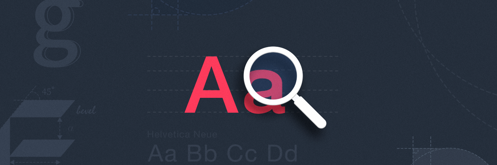
MakicLin
09月11日
第二章：如何区分英文字体
| 本文为付费栏目文章，您已订阅，可阅读全文 |
欢迎回来
上一章我们讲了如何提高审美，希望你已经开始践行并有所收获。从这一章开始我们将系统地了解平面设计的各个元素，比如字体，排版，色彩……不必恐慌，我会用简单易懂的语言解释给你。
字体是平面设计中非常重要的一个元素。平面设计的一大目的就是更清晰地传达信息，所以文字的信息必不可少。我们可能没有机会和能力去设计一款字体，但学会挑选一款合适的字体便能让你的设计质量大幅度提升。在学习如何选择之前，我们需要先认识他们。
看美剧时的「脸盲症」
脸盲症，即面部辨识能力缺乏症。英文学名为 Prosopagnosia 或 Face Blindness。通常表现为：看不清别人的脸或者将很多人的脸记成一个人的脸。
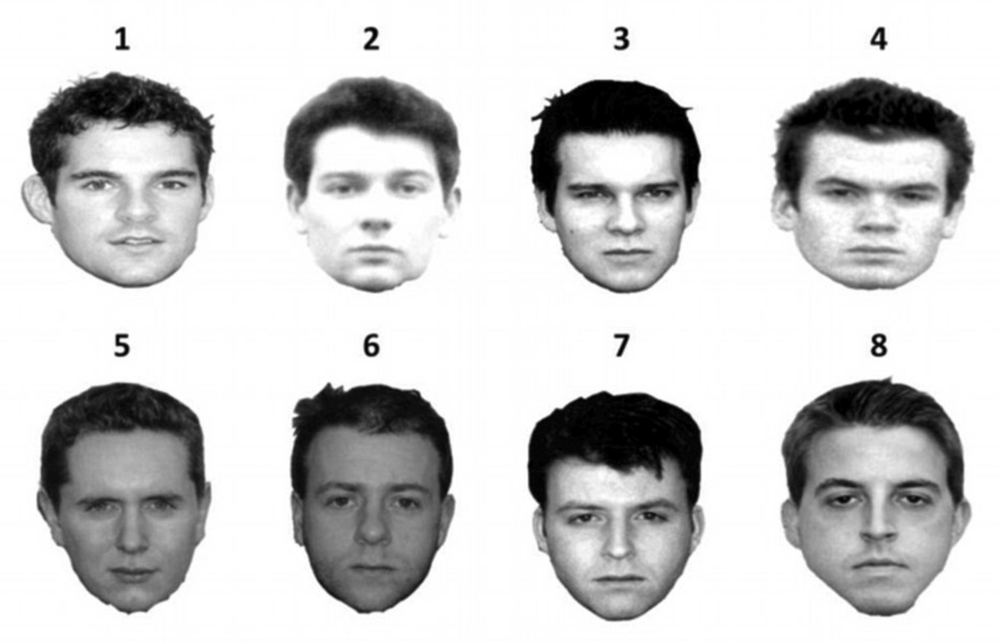
脸盲症测试
你可能没有感受过真正脸盲症患者的痛苦，但看剧（尤其是美剧和英剧）时，一定有不同程度的「脸盲症」。打开一部陌生的剧集，没几个认识的演员，难免分不清他们谁是谁。
这种「脸盲」与真正病症的不同是，这种「脸盲」会在你看过此剧三到四集之后自然消失：因为我们通过短时间不断地积累观看，记住了他们的特征（比如身高、肩宽、五官、衣着……）。
对于字体，亦是如此。在接触字体知识之前，很多字体看起来都差不多，没有多大的区别。这也是因为我们对字体的了解还不够多，变成「字体盲」了。
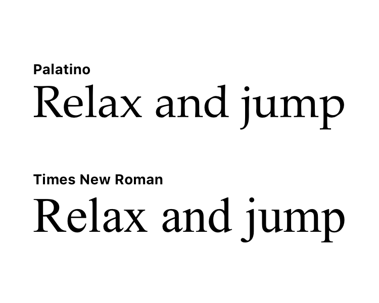
「字体脸盲症」
你能说出上面两个字体的区别么？在阅读完这一章之后，上面两个字体在你眼中将会愈发不同。像通过人的长相认识人一样，我们将通过认识字体的特征，让各个字体间的区别在我们眼中更加明显，从前相似的字体大相径庭。
英文字体的特征
1. 衬线与非衬线（Serif vs. Sans-Serif）
如果粗略区分字体的话，可以分成衬线字体（Serif）和非衬线（Sans-Serif）字体两类。（「Serif」意为「衬线」，「Sans」在法文中意为「没有」。）
衬线，是指笔画末端的装饰线。非衬线字体看起来比较现代时尚，衬线则古典稳重。还有种说法是衬线有视觉引导的作用，可以加快读者的阅读速度。
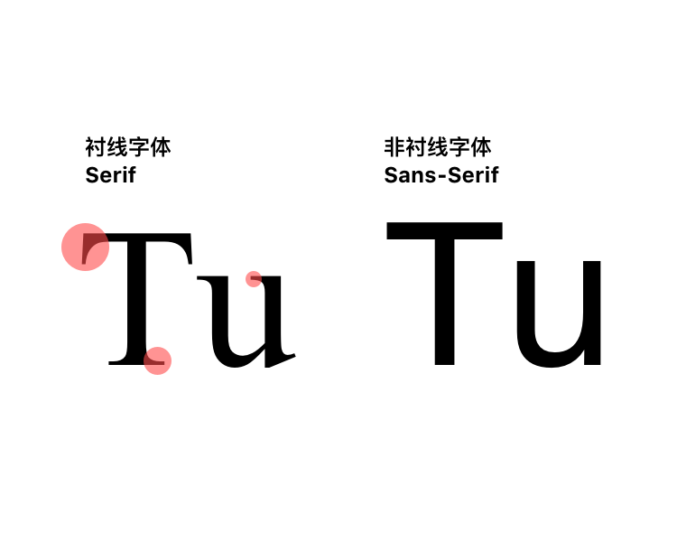
另外，并不是所有衬线字体的衬线都是一样的，即使是非衬线字体也各有各的样子。
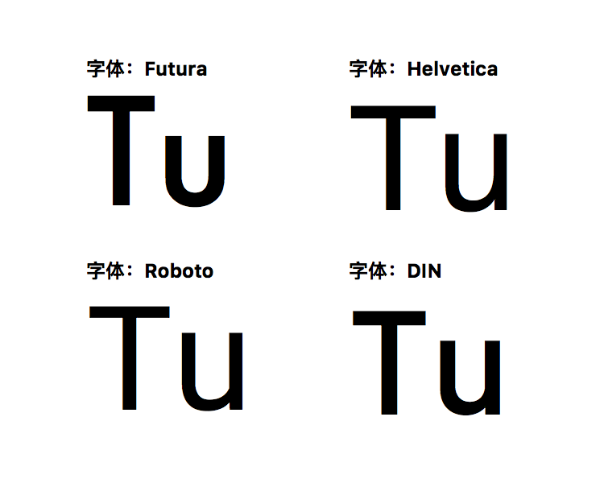
2. x 高度（x-height）
x 高度指英文小写字母 x 的高度，它决定了整套字体小写字母的高度，以及 p、j、y、f、b 这些字母的上下比例。
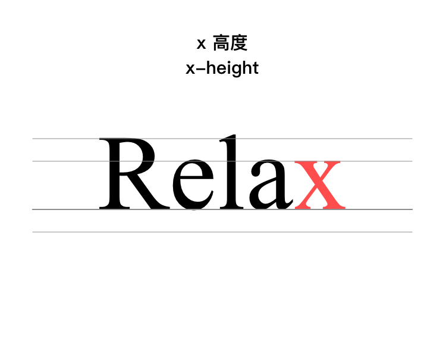
一般中英混排时使用 x 高度较高的英文字体。因为需要两种字体混合使用时，统一 x 高度会显得更加和谐，又由于我们的中文字体都是四四方方，所以 x 高度较高的字体会显得更加方正一些，和方块字更般配。
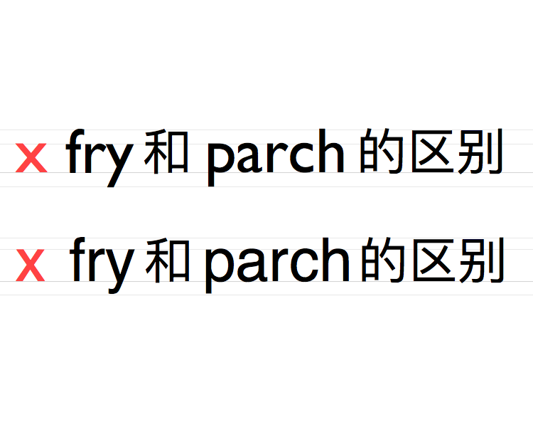
x 高度更高的英文字体和中文混排更加和谐
3. 升部（Ascender）、降部（Descender）
比 x 高度高的部分称为为升部，低的部分是降部。相应也有升部线（ascender line）和降部线（descender line）。升降部的长短，也影响了字母的上下比例。升降部较长的字体看起来更加活跃，反之则更沉稳。
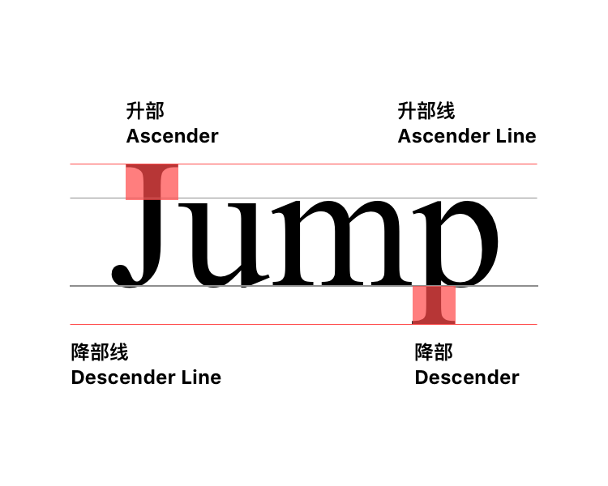
4. 字怀（Counter）
字怀是字母的全封闭或半封闭区域。即使是外观极其相似的字体也会在字怀上的处理有所区别，字怀的形态和大小会被任何细小的改动所影响，是区分字体的重要特征。
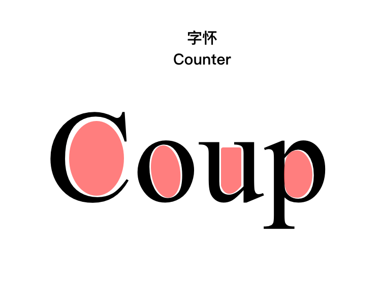
5. 中轴线（Axis）
观察字母 o 可以轻易找到中轴线，中轴线决定了字体的重心。通常竖直中轴线的字体偏几何化（比如，字母 O 像一个圆形而非椭圆形）看上去比较现代；倾斜中轴线的字体更有韵味，显得古典并且稳重。非衬线字体的中轴线通常是竖直的，衬线字体通常是倾斜的。
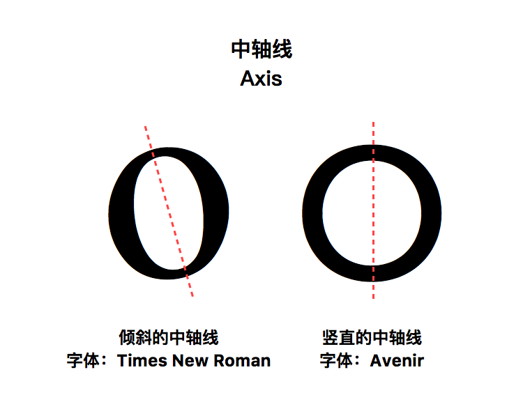
6. 构造（Constructions）
字体的构造可以是斜体（Italic/obilique）或者狭窄的 Condensed 。他们由常规字体演变而来，在软件中与字重选择在同一个菜单里。
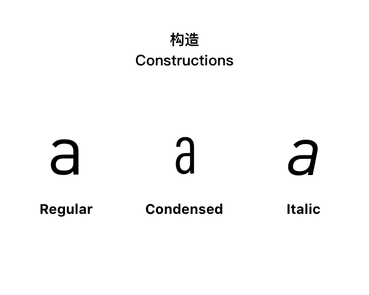
7. 小细节
字体设计是一个极其细致的工作，单看一个字母可能只是毫厘之差，但当字体应用到大段文字的时候就会有千里之别。
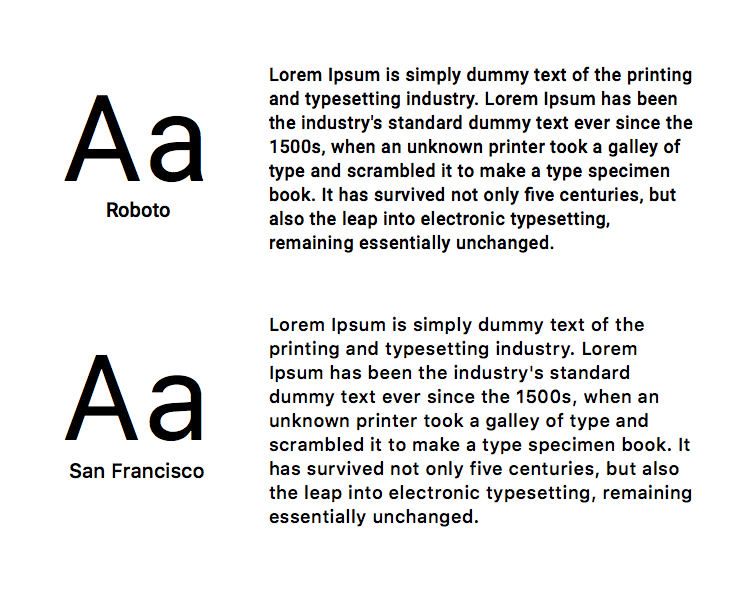
即使看起来相同，大段文字的感觉也是不一样的
各种字体小细节也是我们区别字体的重要依据，有时也隐藏着字体设计师的巧思。上面六点如果无法区分字体，你可以去尝试找这些细节：
(1) 由于英文中 a 与 g 都有两种写法，所以字体对于 a 和 g 的处理会有不同。
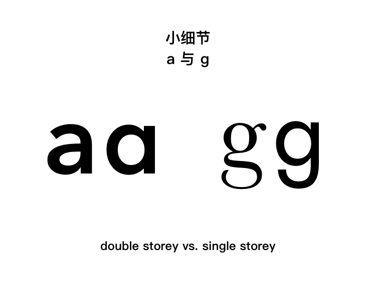
(2) 另外一点是笔划如何开始和结束的，这里的处理更是大相径庭。通过观察笔画结束时的角度和方向，也能区分字体。
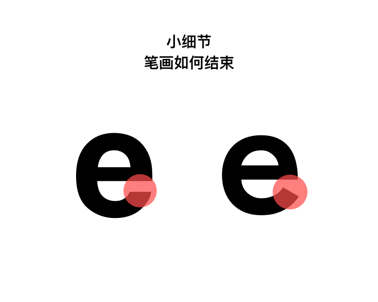
(3) 点，存在于 i、j 字母上的点。有些字体使用圆形点，有的使用方形点，有些则是仔细处理过的近似圆形的形状。
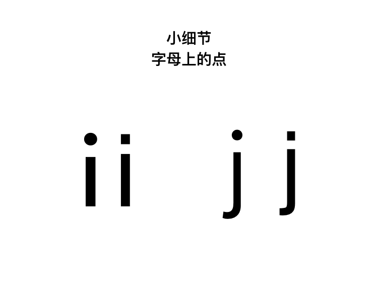
(4) 特征字母也是分辨字体的重要特征，许多字体的 R 会有所区别。比如说区分 Helvetica 和 Akzidenz Grotesk 的最好方法就是区分字母 R。
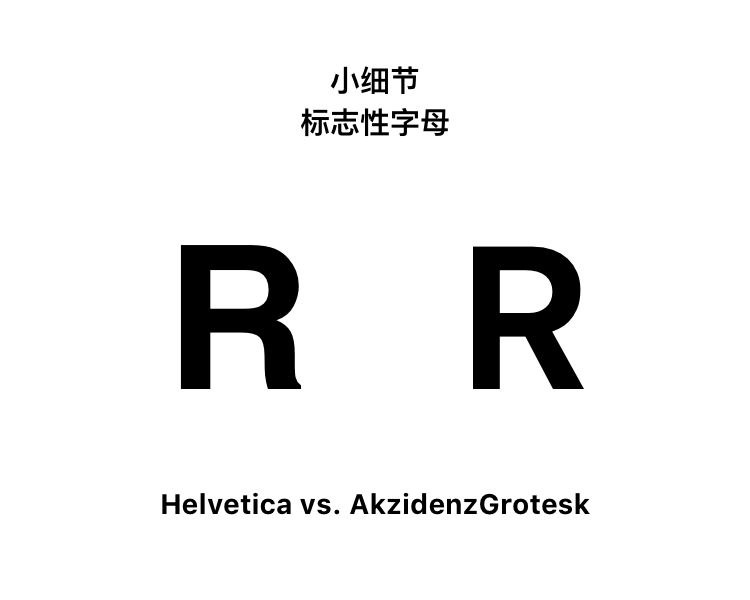
通过观察对比上述十点，我们就可以分辨大多数字体的区别了。下面我们一起试试：
英文字体区分练习
下面有三组相似的英文字体，推荐大家先尝试自己区分其中的区别，然后再看底下的解析。
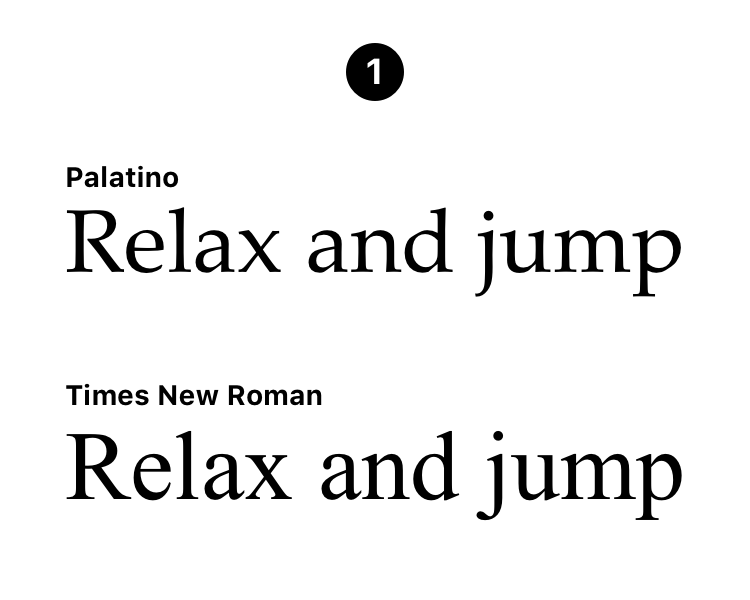
Palatino 和 Times New Roman 同为衬线字体，但两者的衬线细节却各有千秋。从 x 和 a 两个字母就可以明显看出，Times New Roman 的衬线更加水平工整，Palatino 则稍有手写的感觉。对比字母 n 可以发现两者的 x 高度也不相同，Palatino 的 x 高度更矮，整体观感比 Times New Roman 扁很多。通过观察字母 p 可以看出字怀的处理上，Palatino 的字怀更大更圆润，字母 R 的字怀甚至没有封闭完全。
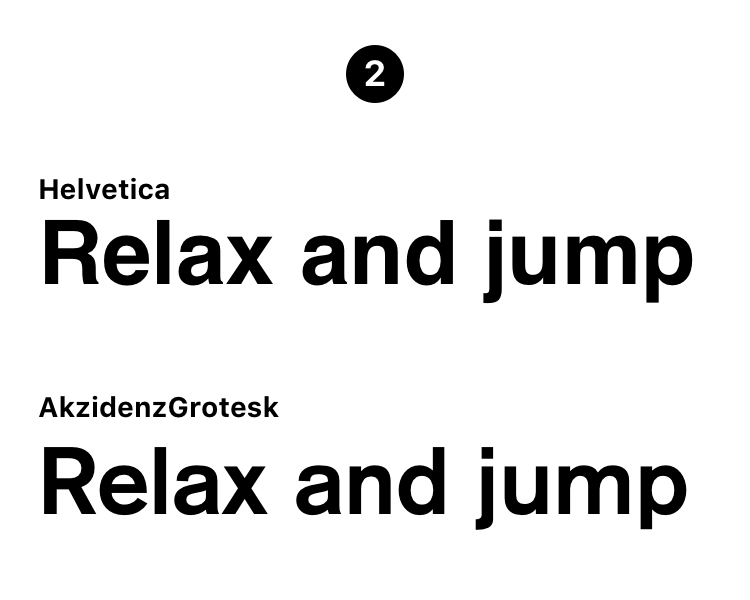
Helvetica 和 AkzidenzGrotesk 是两个非衬线体，属于「父子关系」。两款字体都因国际主义设计风格而流行，而 Helvetica 的设计目的就是与 AkzidenzGrotesk 竞争，其设计也是从 Akzidenz Grotesk 改造而来，但区别还是有的。两个字体的 x 高度几乎相同，看不出明显的踪迹。不过两者在字怀的处理上大相径庭，比较字母 a 可看出Helvetica 的字怀稍小，但更加圆润。标志性字母 R 则可一眼看出差别。通过对比字母 j，可以看到两个字体对于点的位置处理不同，Helvetica 稍微低一些。
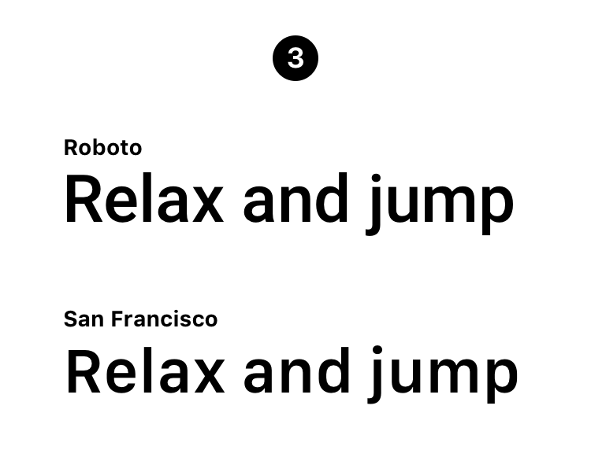
最后是两个十分现代的字体。上面的 Roboto 是 Android 系统的默认字体，下面的 San Francisco 则是 iOS 的默认字体，两个字体都是为了屏幕显示和扁平化的界面而设计，有些神似。首先从字怀来看，San Francisco 的字怀较窄（由字母 p 可看出）。再看字母 e，San Francisco 的笔画结束是竖直的，Roboto 的 e 是以 45° 角结束的。感觉 San Francisco 是在寻找一种竖直方向的对齐（p 的最右边笔画和 e 的最左边笔画都好像刻意被收敛了），Roboto 则更加自由一些。
以上这些特征，只是足够用来辨识字体之间的区别，并不是全部字体设计用到的特征。在这之外还有很多字体特征上的术语，如果你有兴趣继续了解，必然还有很多提升空间。
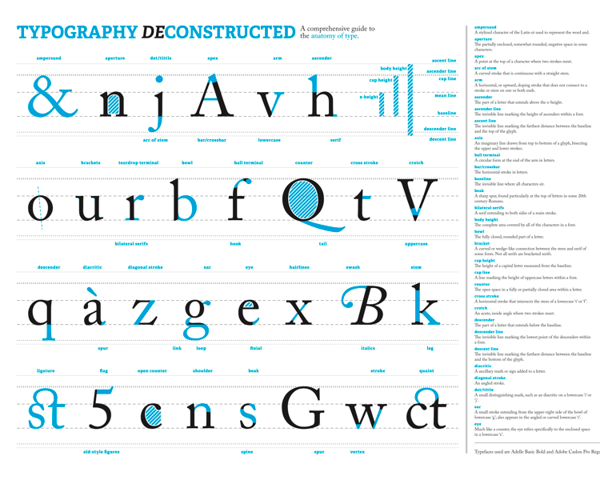
Typography Deconstructed
另外，你也会渐渐发现，仅用衬线体和非衬线体作为区分是完全不够的，在你需要继续英文字体的时候，可以回来参看这篇结合了英文字体历史的详细英文字体分类文章：Type Classifications
我们也会在第四章结合如何选择字体，对此进行更加深入的讲解。
谁在设计英文字体？
见了这么多字体，你一定会好奇到底是谁在做字体呢？实际上字体设计的工作量相当庞大，即使是一个团队也需要少则三四个月，多则一两年的时间才能完成。
现在的英文字体设计资源和字体版权都掌握在一些大的字体厂牌（Type Foundries）手里。英文字体毫无争议的巨头是 Monotype，旗下拥有 Monotype、Linotype、ITC（International Typeface Corporation）、FontFont、Bitstream 等子公司。
几乎所有耳熟能详的英文字体的版权都在他们手中，比如 Baskerville、Bell、Bembo、Centaur、Garamond、Gill Sans、Times New Roman、Bodoni、Futura……这些字体都是非常实用的正文字体（可以用来排版大段文字，不只是作为标题的字体）。
除了行业巨头，还有许多相对小的厂牌和独立设计师在做字体，在 FontShop 的 Foundries 页面中你可以找到他们。另外一些科技巨头比如谷歌，苹果，IBM 会为自己的视觉体系设计一套字体，这些科技公司的字体也不全是独立设计，比如微软的微软雅黑字体就是方正和 Monotype 合作的产物，谷歌的思源黑体是由谷歌和 Adobe 合作开发的。
如果我要使用一个字体，要去哪里找到授权呢？比较大的厂牌都能在官网上找到购买授权的地方，有买断制，也有订阅制。也有一些平台型的网站，比如卖厂牌字体的 Fontshop；同时也卖设计师字体的 myfont 以及专门提供免费字体的 dafont.com。另外也有做网络字体的 Google Font，许多英文网站都在用。创意工具巨头 Adobe 也推出了 Typekit，将多家设计室的字体打包授权给订阅用户。还有租用字体的 Fontstand。
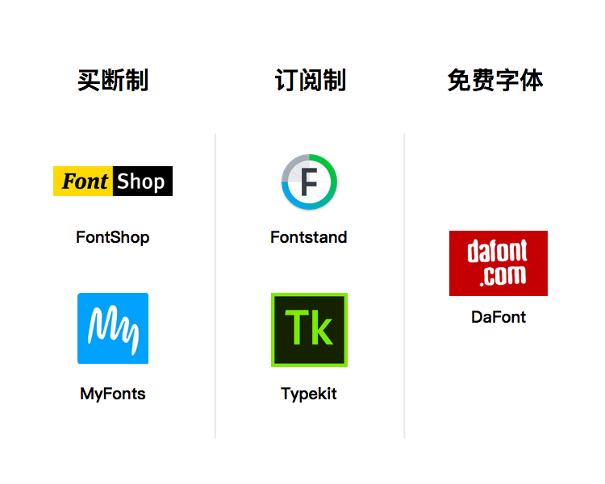
另外，这里有一份关于字体版权的文章，非常值得一读。 你可以从中了解字体版权相关的基础知识，以及一些获取免费字体的渠道：免费字体获取和使用指南
字体设计的工作量非常庞大，而盗版字体则会给字体设计师带来巨大的损失，希望大家尊重字体版权。
推荐阅读
本章的内容比较多，可能需要时间仔细观察并消化。同样，我们也为你准备了扩展内容，便于继续了解英文字体相关的知识，背景甚至设计。这里给大家推荐一本书以及两个网站：
《西文字体：字体的背景知识和使用方法》—小林章
本书的作者小林章是一位日籍的著名字体设计师，任 Monotype 的字体总监，曾参与 Optima 等著名字体的改刻，以及腾讯字体的设计。这本书对西文字体的基础术语概括全面，还包括一些知名字体的设计故事。读完这本书之后，你会对很多经典的英文字体了如指掌，并且进一步加深对西文字体构造的认识，甚至对字体的选择有所了解。
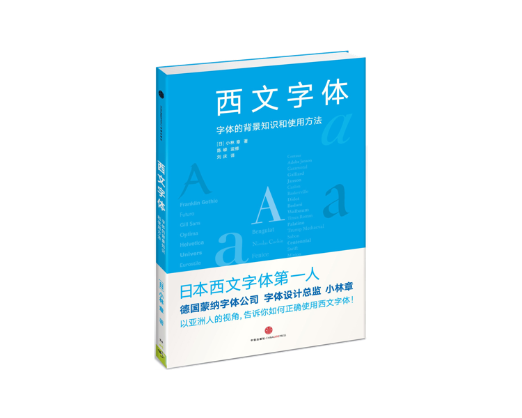
Typewolf
Typewolf 是一个关于字体的博客。他们分享的字体搭配一直走在潮流前沿。而且每天会推荐一个在字体设计较为亮眼的网站。由于网站每天更新，在学习完英文字体的之后，Typewolf 会是一个非常好的「每日学习」样本，每天都会有一个新字体值得观察。
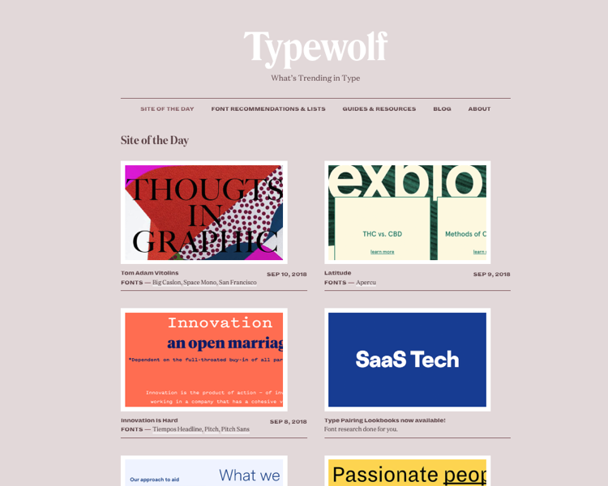
Fonts In Use
Fonts In Use 是一家独立的英文字体档案网站，如果你看到了什么英文字体，却不知是什么字体的时候，去 Fonts In Use 上面找找。连 Taylor Swift 最新专辑《Reputation》封面上用了哪三个字体都能找到。
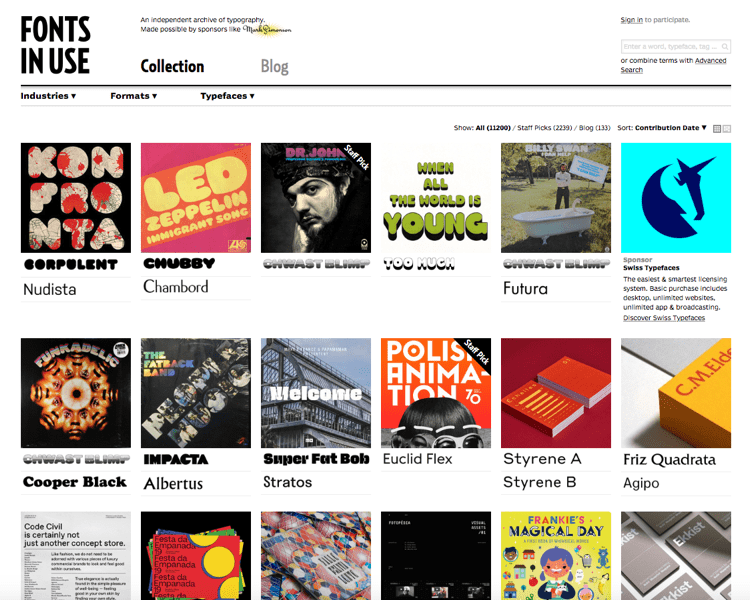
结语
本章的内容至此结束。这一章我们认识了英文字体的字体特征，对字体辨识能力进行了练习并且探讨了谁在设计字体以及去哪里获取正版字体。本章的目的在于掌握基础的区分字体的能力，以便我们日后选择合适的字体。有了英文字体知识作为基础，下一章会进一步学习中文字体的字体特征。感谢你的学习。
上一期
下一期